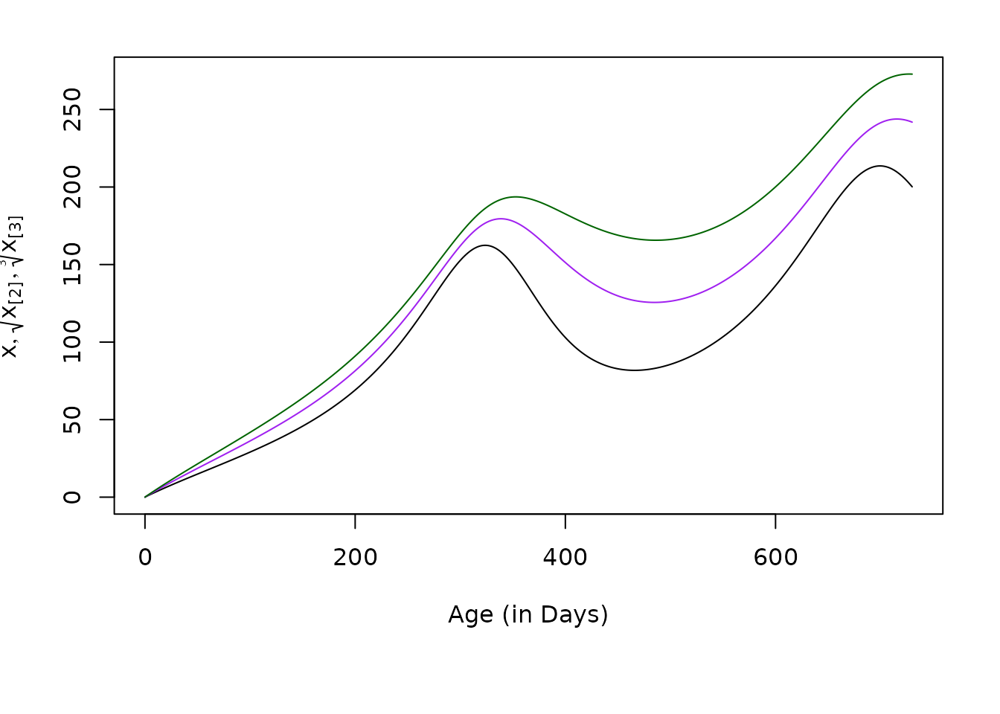
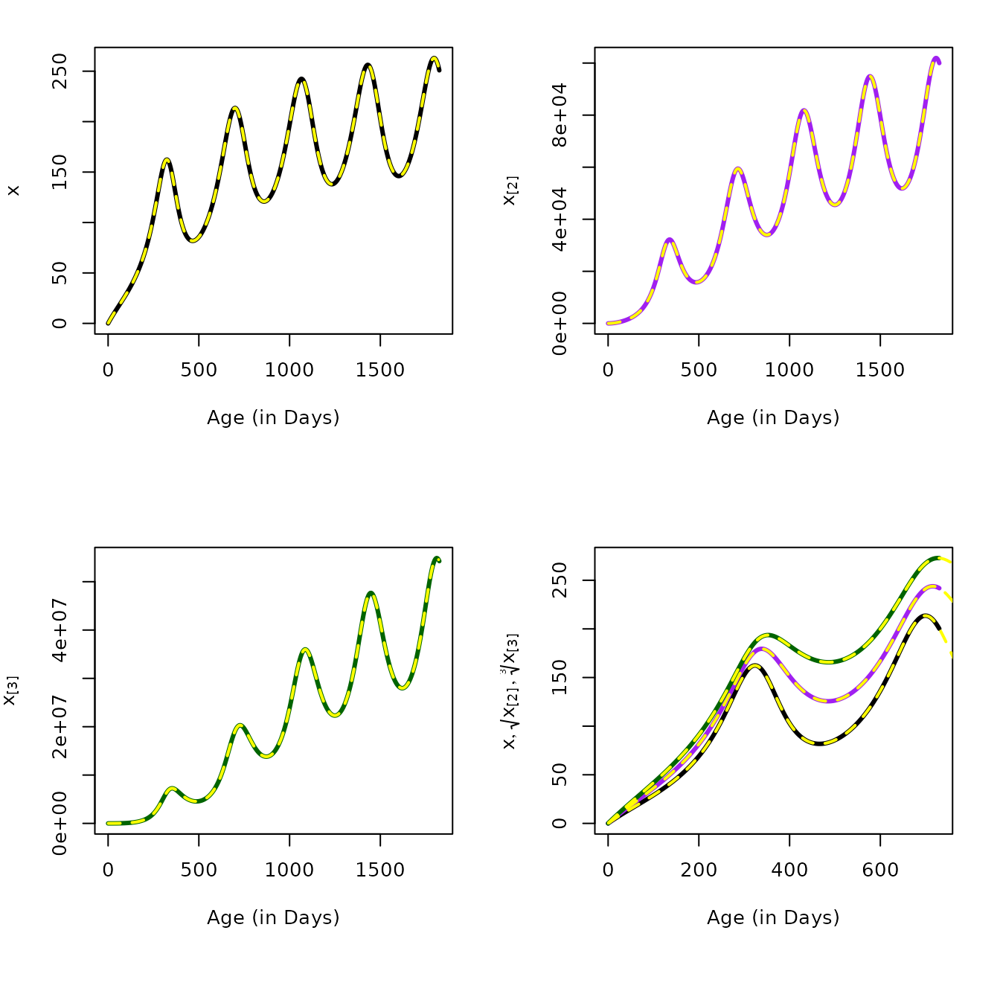

Hybrid Model for the Age of Infection
AoI-Hybrid.RmdIn AoI, we discuss the direct computation of the moments of the distribution of the AoI:
Let \(x\) denote the first moment of the AoI in a cohort at age \(a\), conditioned on a hestory of exposure: \(A_\tau(a; h_\tau(a))\): \[x_\tau(a; h) = \left< A_\tau(a; h) \right> = \int_0^\infty \alpha \frac{z_\tau(\alpha, a; h_\tau(a))} {m_\tau(a;h_\tau(a))}\]
Similarly, we let \(x_\tau(a)[n]\) denote the higher order moments of \(A_\tau(a;)\): \[x_{n}(a, \tau; h) = \int_0^\infty \alpha^n \frac{z_\tau(\alpha, a; h_\tau(a))} {m_\tau(a;h_\tau(a))}\]
Here, we derive hybrid variables describing changes in the first moments:
\[ \frac{\textstyle{dx}}{\textstyle{da}} = 1- \frac{\textstyle{h}}{\textstyle{m}} x \]
All subsequent moments can be computed recursively:
\[ \frac{\textstyle{dx_n}}{\textstyle{da}} = nx_{n-1} - \frac{\textstyle{h}}{\textstyle{m}} x_n \]
In the following, we first demonstrate that the hybrid equations give the same answers as direct computation of the moments.
Demo
par(mar = c(7, 4, 2, 2))
solve_dAoI(5/365, foiP3) -> mt
plot(mt$time, mt$xn1, type = "l", xlab = "Age (in Days)", ylab = expression(E(A[tau](a))), ylim = range(mt$xn3^(1/3)))
lines(mt$time, mt$xn2^(1/2))
lines(mt$time, mt$xn3^(1/3)) 
aa = seq(1, 5*365, by = 5)
moment1 = momentAoI(aa, foiP3)
moment2 = momentAoI(aa, foiP3, n=2)
moment3 = momentAoI(aa, foiP3, n=3)- By solving a hybrid model with variables that track the moments, using the equations that we derived above:
solve_dAoI(5/365, foiP3, Tmax = 5*365, dt=5) -> mt
par(mfrow = c(3,1), mar = c(7, 4, 2, 2))
plot(mt$time, mt$xn1, type = "l", xlab = "Age (in Days)", ylab = expression(E(A[tau](a))), lwd=2)
lines(aa, moment1, col = "red", lwd=2, lty=2)
plot(mt$time, mt$xn2, type = "l", xlab = "Age (in Days)", ylab = "second moment", lwd=2)
lines(aa, moment2, col = "red", lwd=2, lty=2)
plot(mt$time, mt$xn3, type = "l", xlab = "Age (in Days)", ylab = "third moment", lwd=2)
lines(aa, moment3, col = "red", lwd=2, lty=2)
Derivation for \(dx/da\)
In Dynamics, we present an equation for \(z_\tau(\alpha,a),\) the density function for infections of age \(\alpha\) in a host cohort of age \(a\) born on day \(\tau\). The dynamics of \(z(\alpha,a)\) are described by the following:
\[\begin{equation} \tag{1} \frac{\partial z}{\partial a} + \frac{\partial z}{\partial \alpha} = - r z \end{equation}\]
with the boundary condition:
\[ z_\tau(0,a) = h_\tau(a) \]
and its solutions are:
\[ z_\tau(\alpha,a) = h_\tau(a-\alpha) e^{-r \alpha} \]
In MoI, we defined the distribution function for the MoI:
\[M_\tau(a) \sim f_M(\zeta; a, \tau) = \mbox{Pois}(m_\tau(a))\]
and we showed that the mean MoI, \(m_\tau(a)\) is:
\[\begin{equation} m_\tau(a) = \int_0^a z_\tau(\alpha, a) d \alpha \end{equation}\]
In AoI, we defined a probability density function for the AoI:
\[ A_\tau(a) \sim f_A(\alpha; a, \tau) = \frac{z_\tau(\alpha,a)}{m_\tau(a)} \]
Here, we derive an equation for \[\frac{dx}{da} = \frac{d\left<A\right>}{da}\]
We start by multiplying Eq. 1 by \(\alpha\) and integrating with respect to \(\alpha\):
\[\begin{equation} \int_0^a \alpha \frac{\partial z(\alpha, a)}{\partial a} d \alpha + \int_0^a \alpha \frac{\partial z(\alpha, a)}{\partial \alpha} d\alpha = - r \int_0^a \alpha z(\alpha, a) d\alpha, \end{equation}\]
By its definition,
\[\int_0^a \alpha z(\alpha, a) d\alpha = \left<A \right> m\]
So we can simplify a bit:
\[\begin{equation} \tag{2} \frac{\partial \left<A \right>m}{\partial a} d \alpha + \int_0^a \alpha \partial z = - r \left<A \right> m \end{equation}\]
On the RHS of Eq. 2, the first term can be rewritten:
\[\begin{equation} \frac{\partial \left<A \right> m}{\partial a}= m \frac{\partial \left<A \right>}{\partial a} + \left<A \right> \frac{\partial m}{\partial a} \end{equation}\]
On the RHS of Eq. 2, the second term can be rewritten by integrating by parts:
\[\begin{equation} \int_0^a \alpha \partial z = \alpha z(a,\alpha) \big|_{\alpha = a} - \alpha z(a,\alpha) \big|_{\alpha = 0} - \int_0^a z d\alpha \end{equation}\]
which simplifies to:
\[\begin{equation} \int_0^a \alpha \partial z = a h_d(0)e^{-ra} - m \end{equation}\]
Substituting, we get:
\[\begin{equation} m \frac{\partial \left<A \right>}{\partial a} + \left<A \right> \frac{\partial m}{\partial a} + a h_d(0)e^{-ra} - m = - r \left<A \right> m \end{equation}\]
We divide through by \(m\) and rearrange to get:
\[\begin{equation} \frac{\partial \left<A \right>}{\partial a} = - \frac{\left< A \right>}{m} \frac{\partial m}{\partial a} - \frac{a}{m} h_d(0)e^{-ra} + 1 - r \left<A \right> \end{equation}\]
We substitute \(dm/da = h - rm\) and simplify:
\[\begin{equation} \frac{\partial \left<A \right>}{\partial a} = - \frac{\left< A \right>}{m} (h - rm) - \frac{a}{m} h_d(0)e^{-ra} + 1 - r \left<A \right> \end{equation}\]
and after rearranging terms and cancelling:
\[\begin{equation} \frac{\partial \left<A \right>}{\partial a} = 1 - h \frac{\left< A \right>}{m} - \frac{a}{m} h_d(0)e^{-ra} \end{equation}\]
or since we are letting \(x = \left< A \right>\) \[\begin{equation} \frac{d x}{d a} = 1 - \frac{h}{m} x - \frac{a}{m} h_d(0)e^{-ra} \end{equation}\]
I can’t remember why that last term goes away
Noting that: \[\begin{equation} \lim_{m\rightarrow 0} \frac{A}{m} = \lim_{m\rightarrow 0} \frac{a}{m} = 1 \end{equation}\]
Derivation for \(dx_n/da\)
To derive a tracking equation for \(\left<A^n \right>\), we start as before but multiply by \(\alpha^n\) to get:
\[\begin{equation} \int_0^a \alpha^n \frac{\partial z}{\partial a} \partial \alpha + \int_0^a \alpha^n \frac{\partial z}{\partial \alpha} \partial \alpha = \int_0^a - r \alpha^n z \partial \alpha \end{equation}\] which we can rewrite as: \[\begin{equation} \frac{\partial \left<A^n \right> m}{\partial a} + \int_0^a \alpha^n \partial x = - r \left<A^n\right> m \end{equation}\]
Integrating the middle term by parts,
\[\begin{equation} \int_0^a \alpha^n \partial z = \alpha^n z(a,\alpha) \big|_{\alpha = 0}^{a} - n \int_0^a \alpha^{n-1} z d\alpha \end{equation}\]
so we can rearrange this to get Eq.~\(\ref{dAnda}\). Once again, we are concerned with the limits as \(m\) becomes small:
\[\begin{equation} \lim_{m\rightarrow 0} \frac{A}{m} = \lim_{m\rightarrow 0} \frac{a}{m} = 1 \end{equation}\]